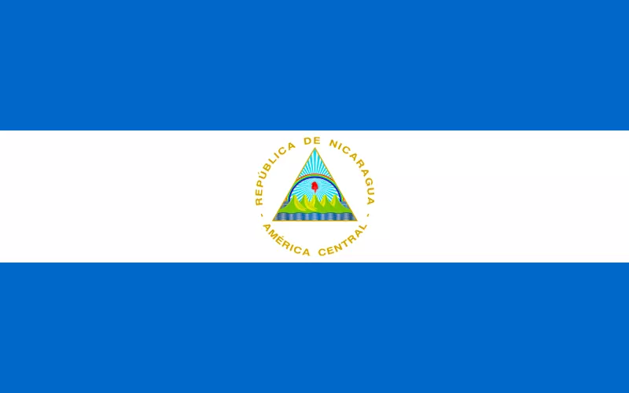
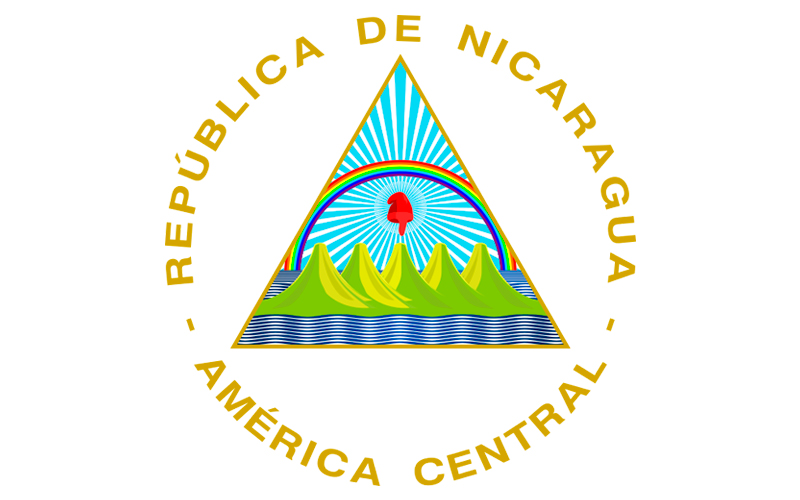
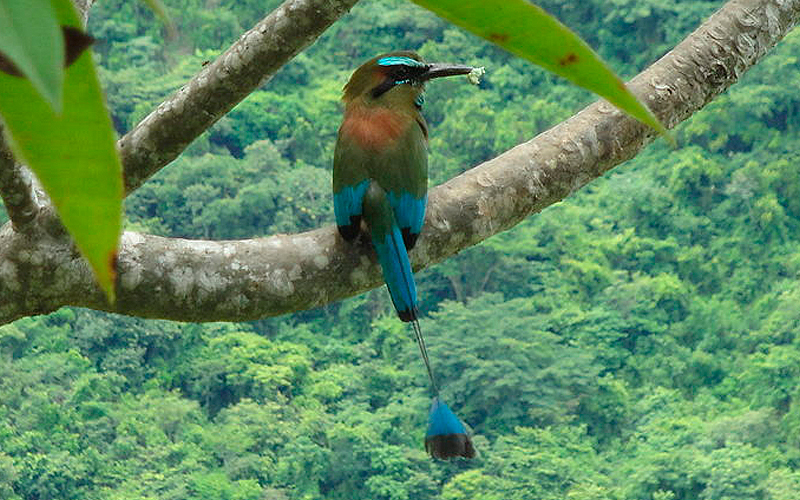

Símbolos Patrios

La Bandera Nicaragüense tiene tres franjas horizontales (dos
azules, arriba y abajo) con el escudo nacional en el centro, en la
franja blanca. La franja blanca del Pabellón Nacional representa
el territorio de la nación y simboliza la pureza de Nicaragua. Las
dos franjas azules significan que Nicaragua está bañado por dos
océanos.

El escudo nacional es un triángulo rodeado circularmente con las
palabras REPÚBLICA DE NICARAGUA arriba y AMÉRICA CENTRAL abajo.

Esta colorida ave es fácilmente reconocida por su larga cola
rematada por dos plumas azules. Estos se alimentan principalmente
de insectos. Cavan su nido en un hoyo en la tierra, para poner sus
huevos. Pueden ser vistos en los bosques de Nicaragua,
principalmente al sudoeste del país.
Historia
Cristóbal Colón, descubrió la costa Caribe de Nicaragua, el 12 de
septiembre de 1502, cuando se refugió de una tormenta al doblar la
desembocadura del río Coco en el cabo Gracias a Dios en su cuarto y
último viaje. Posteriormente, desembarco en la desembocadura del río
Grande de Matagalpa al que llamó "río del Desastre" porque en sus
fuertes corrientes perdió una de sus naves.
Gil González Dávila fue el primer explorador de conquista que visitó
parte de las regiones costeras del Pacífico nicaragüense en
1522-1523, durante su recorrido tuvo contacto con un poderoso
cacique indígena llamado Nicaragua, Niqueragua o Nicarao, en cuyos
dominios se bautizaron 9.017 personas y se recogieron 18.506 pesos
de oro bajo. Después González Dávila se trasladó a un territorio
llamado Nochari, situado unas seis leguas al norte de la corte del
rey Nicarao, donde habitaban cinco reyes llamados Ochomogo,
Nandapia, Mombacho, Morati y Gotega (Coatega). Allí se bautizaron
12,607 personas más, y un poderoso jefe llamado Diriangén vino con
un suntuoso cortejo a entrevistarse con ´los españoles, pero a los
pocos días, el 17 de abril de 1523, regresó para enfrentarlos en
combate. La expedición logró vencer a los guerreros de Diriangén,
pero tuvo que retirarse a los dominios de Nicarao, donde hubo otro
enfrentamiento con los indígenas. Finalmente, González Dávila optó
por marchar hacia el sur, y en el golfo de Nicoya se reembarcó con
destino a Panamá, sin haber dejado fundación alguna.
En 1524, Francisco Hernández de Córdoba, enviado por el gobernador
de Castilla del Oro Pedrarias Dávila, fundó las dos primeras
ciudades en lo que seria más tarde Nicaragua: Granada, a orillas del
Lago Cocibolca, y Santiago de los Caballeros de León, a orillas del
Lago Xolotlán.
Durante el periodo colonial, Nicaragua formó parte de la Capitanía
General de Guatemala. Durante ese periodo Nicaragua fue la principal
vía de comunicación entre el Pacífico y el Atlántico ya que tenía un
sistema de transporte lacustre que facilitaba el movimiento de
materias y personas a regiones aledañas. El Realejo fue en
particular uno de los puertos principales en el Pacífico donde se
construyeron gran parte de los galeones entre Manila y Acapulco. El
Realejo, entre los siglos XVI y principios del XIX, sirvió como uno
de los puertos principales en el comercio de esclavos para las
colonias en el Pacífico como Perú, Ecuador, Colombia, Acapulco, y
como punto de concentración de las riquezas que se obtuvieron por
medio del comercio bimetálico (Plata para China por medio de Manila,
y oro para España). Gran parte de esos movimientos, pasaron por
Nicaragua ya que era la más fácil y mejor protegida, aun así
Nicaragua fue atacada por diferentes naciones, Inglaterra en
particular.